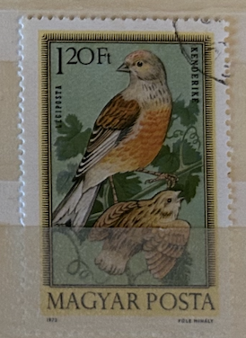
| SOURCE | TITLE| IMAGE MATCH | click to source page |
| iStock | Postage Stamp Printed In Hungary Showing Birds Stock Photo - Download Image Now - Animal, Animal Wildlife, Antique - iStock | 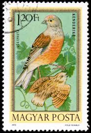 |
| Amazon.com.au | Wee Blue Coo POSTAGE STAMP HUNGARY 120 FORINT LINNET BIRD NEW FRAMED ART PRINT B12X11033 : Amazon.com.au: Home | 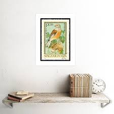 |
| Young Timouse? Proper name of what they are called please? | 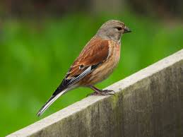 | |
| eBay | 1907 ANTIQUE BIRD PRINT ~ TWITE | eBay | 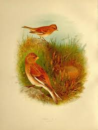 |
| Birdbuddy | Common Linnet vs European Greenfinch - Birdbuddy WIKI | 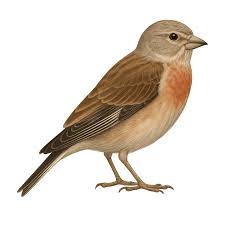 |
| Theme Birds on Stamps | Common Linnet stamps images | 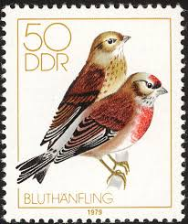 |
| Flickr | wildlife photographers | Flickr | 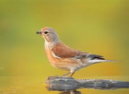 |
| Alpine Accentor (Switzerland) : r/BirdPhotography | 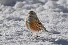 | |
| Wiktionary | fjallígða - Wiktionary, the free dictionary | 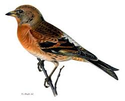 |
| DiBird.com | Brambling / Fringilla montifringilla photo call and song | 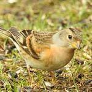 |
| Flickr | Watch The Birdie" P2 C2***Only birds*** NO OTHER IMAGES | Flickr | 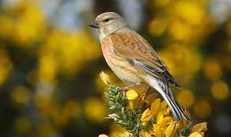 |
| Creazilla logo | n140_w1150 - Traditional visual art under Public domain license | 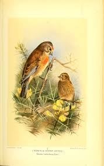 |
| Freepik | Ethereal nightingale stunning hd photograph of a bird perched on a vibrant background | Premium AI-generated image | 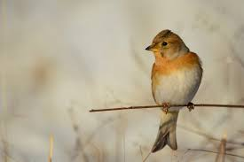 |
| Wikipedia | Linaria (bird) - Wikipedia | 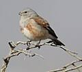 |
| Blogger.com | Kearsney Birder: BIRDS OF TIERRA DEL FUEGO | 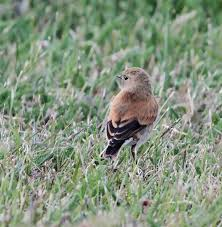 |
| Young male goldfinch puzzled by passing bee | 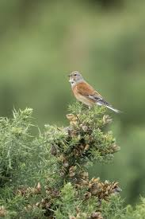 | |
| qualitative-methoden.ch | Mid Century Modern Prescious Miniatures By P.H G°onner Lithograph Prints Art | 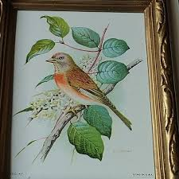 |
| Etsy | 1897 Original Antique Chromolithograph With Birds, Linnet Illustration, Vintage Bird Print - Etsy | 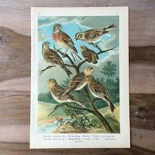 |
| Birds you've never seen but should of by now Brambling | 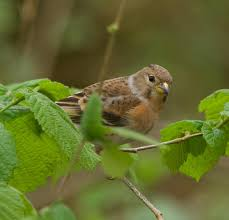 | |
| Wildlife Garden | Brambling - Wildlife Garden Online | 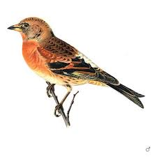 |
| Wikipedia | Yemen linnet - Wikipedia | 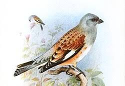 |
| Theme Birds on Stamps | Birds on stamps: Greece Text only, with links to images | 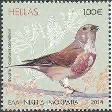 |
| 1stDibs | Antique Bird Print of the Snow Bunting from a Swedish Bird Book, 1927 For Sale at 1stDibs | antique bird book | 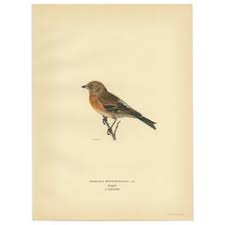 |
| 30 Bird song ideas | bird, bird art, beautiful birds | 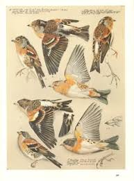 | |
| eBay | Birkenzeisig Erlenzeisig Bluthänfling Linaria Cannabina Farbdrucke From 1928 | eBay | 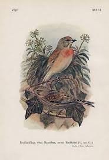 |
| Cabildo de Tenerife | GUIDE TO THE BIRDS | 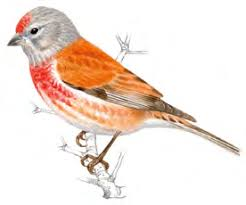 |
| Bradfield and Stocksbridge Walkers | Barnsley Boundary Walks 1-12 X7mg.cdr | 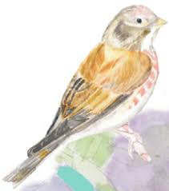 |
| This morning, Kekerdom, the Netherlands. | 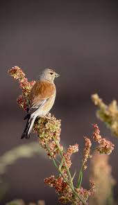 | |
| First set of good shots of a nesting pair of Linnets. #eurasianlinnet #linnets #finches #nestingpair The eurasian Linnet is a musical bird in flight. It is primarily found in weedy or grassy | 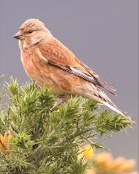 | |
| What bird species is this in Namibia? | 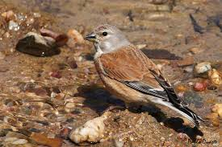 | |
| Flickr | All Wildlife Photography | Flickr | 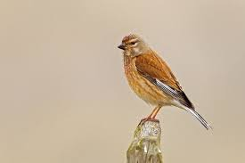 |
| acopiancenter.am | Brambling - A Field Guide to Birds of Armenia ::Acopian Center for the Environment | 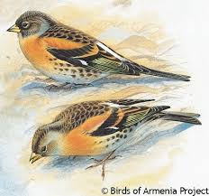 |
| a nice walk round this morning . | 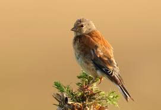 | |
| Dreamstime.com | Carduelis Cannabinam Common Linnet in the Nature Habitat. Brown Bird with Grey Head Sitting in the Grass, Czech Republic, Europe Stock Photo - Image of portrait, perch: 196612936 | 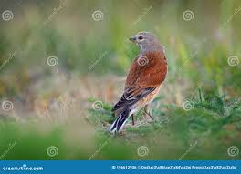 |
| Flickr | Linaria cannabina-Kneu-Eurasian Linnet | Koen Mertens | Flickr | 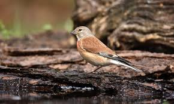 |
| Flickr | DCS_1537 | Rudy Jacobs | Flickr | 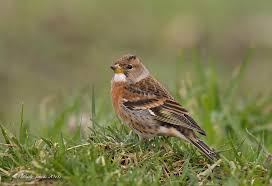 |
| Calandria aliblanca - White-winged Lark - Weißflügellerche - Alouette leucoptère | 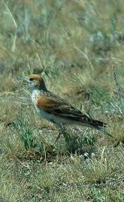 | |
| Flickr | Linnet | Nigel Harland | Flickr | 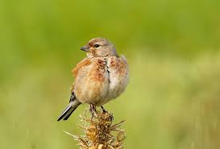 |
| The Times | The birds to spot in your garden | 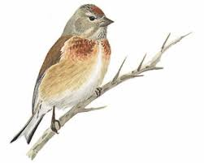 |
| Soaking up the morning sun in Saudi Arabia | 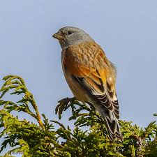 | |
| pet-abuse.com | 22 Birds that Lay Blue Eggs and Why? - Pet Abuse | 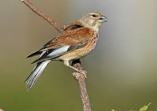 |
| petesfavouritethings.blog | Dungeness – Pete's Favourite Things | 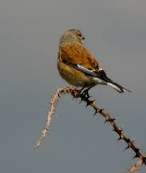 |
| BirdGuides | Common Linnet by John Betts - BirdGuides | 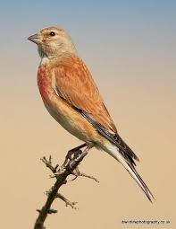 |
| Flickr | Bird Photography |:: | Flickr | 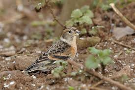 |
| Pngtree | Mating Season Of The Rare Linnet Bird In Photo Background And Picture For Free Download - Pngtree | 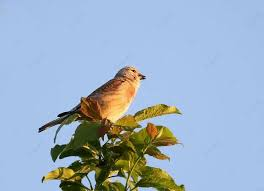 |
| Wordnik | Fe - definition and meaning | 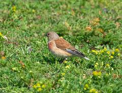 |
| BirdLife Cyprus | Common Linnet - BirdLife Cyprus | 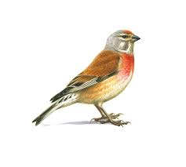 |
| Getty Images | Closeup Of Songbird Perching On Sand High-Res Stock Photo - Getty Images | 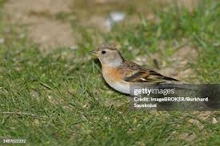 |
| LuontoPortti | Brambling, Fringilla montifringilla - Birds - NatureGate | 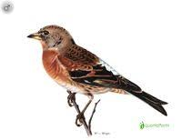 |
| BirdGuides | Common Linnet by Mary Wilde - BirdGuides | |
| Flickr | Birds Birds Birds ! (Check out the new discussion) | Flickr | |
| Are these Linnet ?? | ||
| Trans Pennine Trail | Wildlife | Trans Pennine Trail | |
| acopiancenter.am | Eurasian Linnet - A Field Guide to Birds of Armenia ::Acopian Center for the Environment | |
| An excellent day, took far too many photos (trying for flight shots with a distinct lack of success). Some great sightings and some of the best/closest Brambling pictures that I've taken. | ||
| Devon Birds | Crownhill Down - Devon Birds | |
| Flickr | Bluthänfling , NGID942903607 | NABU|naturgucker geG | Flickr | |
| Sophie (@sophwildlife.snaps) • Instagram photos and videos | ||
| Getty Images | Linnet Male And Female Perching On Branches Looking Away High-Res Vector Graphic - Getty Images |